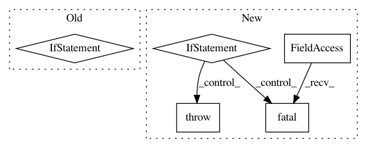

72e0907d7784f62157906818686da273ab6aa7ed,niftynet/contrib/segmentation_bf_aug/segmentation_application_bfaug.py,SegmentationApplicationBFAug,initialise_dataset_loader,#SegmentationApplicationBFAug#Any#Any#Any#,58
Before Change
self.segmentation_param = task_param
// read each line of csv files into an instance of Subject
if self.is_training:
file_lists = []
if self.action_param.validation_every_n > 0:
file_lists.append(data_partitioner.train_files)
file_lists.append(data_partitioner.validation_files)
else:
file_lists.append(data_partitioner.train_files)
self.readers = []
for file_list in file_lists:
reader = ImageReader(SUPPORTED_INPUT)
reader.initialise(data_param, task_param, file_list)
self.readers.append(reader)
else: // in the inference process use image input only
inference_reader = ImageReader(["image"])
file_list = data_partitioner.inference_files
inference_reader.initialise(data_param, task_param, file_list)
self.readers = [inference_reader]
foreground_masking_layer = None
if self.net_param.normalise_foreground_only:
foreground_masking_layer = BinaryMaskingLayer(
type_str=self.net_param.foreground_type,
After Change
// initialise input image readers
if self.is_training:
reader_names = ("image", "label", "weight", "sampler")
elif self.is_inference:
// in the inference process use `image` input only
reader_names = ("image",)
elif self.is_evaluation:
reader_names = ("image", "label", "inferred")
else:
tf.logging.fatal(
"Action `%s` not supported. Expected one of %s",
self.action, self.SUPPORTED_PHASES)
raise ValueError
try:
reader_phase = self.action_param.dataset_to_infer
except AttributeError:
reader_phase = None
In pattern: SUPERPATTERN
Frequency: 3
Non-data size: 5
Instances
Project Name: NifTK/NiftyNet
Commit Name: 72e0907d7784f62157906818686da273ab6aa7ed
Time: 2018-09-11
Author: wenqi.li@ucl.ac.uk
File Name: niftynet/contrib/segmentation_bf_aug/segmentation_application_bfaug.py
Class Name: SegmentationApplicationBFAug
Method Name: initialise_dataset_loader
Project Name: NifTK/NiftyNet
Commit Name: 2345eb88f3264da85643a4d9d5adec3cf6f9b973
Time: 2017-11-14
Author: wenqi.li@ucl.ac.uk
File Name: niftynet/io/image_reader.py
Class Name:
Method Name: _filename_to_image_list
Project Name: NifTK/NiftyNet
Commit Name: 5a29571bdeb6deaffa8ed1e7b404566bc7b62505
Time: 2017-08-19
Author: wenqi.li@ucl.ac.uk
File Name: niftynet/io/image_reader.py
Class Name: ImageReader
Method Name: initialise_reader